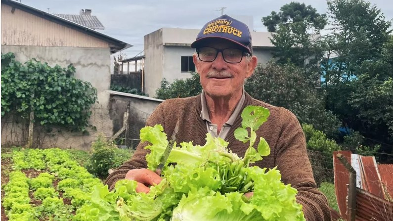

Agroecologia urbana que gera trabalho e renda para pessoas
A agroecologia urbana valoriza o plantio em espaços disponíveis nas cidades como fonte de ocupação produtiva. Hortas em terrenos ociosos, plantio em recipientes e canteiros verticais podem ser usados para gerar emprego, renda extra e novas oportunidades para famílias e trabalhadores locais.
Além de produzir alimentos saudáveis, estas iniciativas fortalecem a economia local, incentivam a inclusão social e ajudam a criar ambientes mais verdes e resilientes.
Fonte: estudos de agroecologia urbana e iniciativas de inclusão produtiva em áreas urbanas.